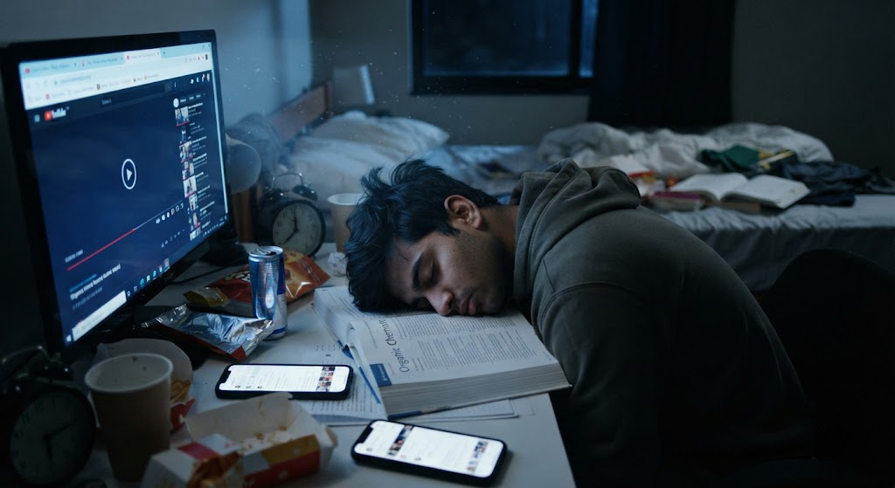

¿Por qué el sueño es tan importante?
Muchas personas creen que dormir menos significa tener más tiempo para estudiar. Sin embargo, ocurre todo lo contrario: la falta de descanso reduce la capacidad de concentración, dificulta el aprendizaje y aumenta los errores.
Dormir bien permite que el cerebro procese la información aprendida durante el día y recupere la energía necesaria para afrontar nuevos desafíos.
"Dormir bien no es un premio después de estudiar; es parte del proceso de aprender."
— EnfocaT¿Qué sucede en tu cerebro mientras duermes?
Mientras descansas, tu cerebro organiza la información, fortalece los recuerdos y elimina parte del desgaste mental acumulado durante el día. Por eso, después de una buena noche de sueño, es más fácil recordar lo aprendido y resolver problemas.
🧠 Memoria
Se fortalecen los conocimientos adquiridos durante el día.
⚡ Energía
El cerebro recupera recursos para mantener la concentración.
😊 Estado de ánimo
Dormir ayuda a controlar mejor el estrés y las emociones.
🎯 Atención
Mejora la capacidad para concentrarte en tus tareas.
¿Cuántas horas deberías dormir?
No todas las personas necesitan exactamente las mismas horas de sueño, pero la mayoría de los estudiantes y adultos jóvenes obtienen su mejor rendimiento durmiendo entre 7 y 9 horas cada noche.
⏰ Recomendación
Dormir menos de 6 horas de forma frecuente puede afectar la memoria, la concentración y la capacidad para tomar decisiones. Mantener un horario regular para acostarte y levantarte es tan importante como la cantidad de horas que duermes.
😴 7 - 9 horas
El rango recomendado para la mayoría de estudiantes y adultos jóvenes.
🕘 Horario fijo
Dormir y despertar a la misma hora ayuda a regular tu reloj biológico.
🌞 Luz natural
Recibir luz solar durante la mañana favorece un mejor descanso por la noche.
💧 Hidratación
Mantenerte hidratado durante el día también influye en la calidad del sueño.
Errores que afectan tu descanso
Muchas veces creemos que dormimos lo suficiente, pero ciertos hábitos reducen la calidad del sueño sin que nos demos cuenta.
- 📱 Usar el celular justo antes de dormir.
- ☕ Consumir café o bebidas energéticas durante la noche.
- 🎮 Jugar videojuegos hasta altas horas.
- 🍕 Cenar muy pesado antes de acostarte.
- 🌙 Cambiar constantemente la hora de dormir.
- 💻 Estudiar en la cama todos los días.

"Una buena noche de sueño puede ser más valiosa que una hora extra de estudio."
— EnfocaTRutina nocturna para dormir mejor
Crear una rutina antes de acostarte ayuda a que tu cerebro entienda que es momento de descansar. No necesitas hacer cambios drásticos; pequeñas acciones constantes generan grandes resultados.
🌙 1. Apaga las pantallas
Intenta dejar el celular, la tablet o el computador al menos 30 minutos antes de dormir.
📖 2. Lee unas páginas
Leer un libro o una revista puede ayudarte a relajarte mucho más que revisar redes sociales.
🧘 3. Relájate
Respira profundamente, escucha música tranquila o realiza estiramientos suaves antes de acostarte.
🛏️ 4. Mantén tu habitación cómoda
Procura que el lugar donde duermes sea oscuro, silencioso y tenga una temperatura agradable.
💡 Consejo EnfocaT
Si tienes un examen importante, evita estudiar hasta la madrugada. Dormir bien la noche anterior suele mejorar más tu rendimiento que intentar memorizar información cuando ya estás agotado.
Conclusión
Dormir bien no es un lujo, es una necesidad. El descanso influye directamente en tu capacidad para aprender, recordar información y mantenerte concentrado durante el día.
En EnfocaT creemos que una buena productividad comienza mucho antes de abrir un cuaderno o un computador. Descansar correctamente, mantener horarios estables y cuidar tu bienestar son hábitos que marcarán la diferencia en tu rendimiento académico y personal.
📤 Comparte este artículo
📚 Artículos relacionados
🚫 Cómo dejar de procrastinar
Aprende estrategias para vencer la procrastinación y empezar tus tareas con más facilidad.
🍅 La técnica Pomodoro
Descubre cómo estudiar por bloques de tiempo puede aumentar tu concentración y productividad.
🧠 Hábitos para estudiantes exitosos
Pequeños hábitos diarios pueden producir grandes resultados en tu vida académica.